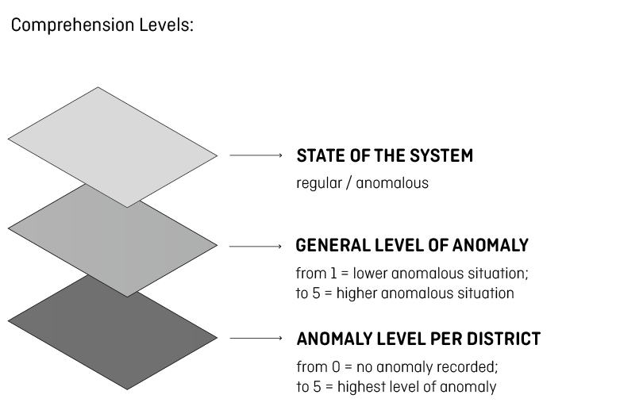
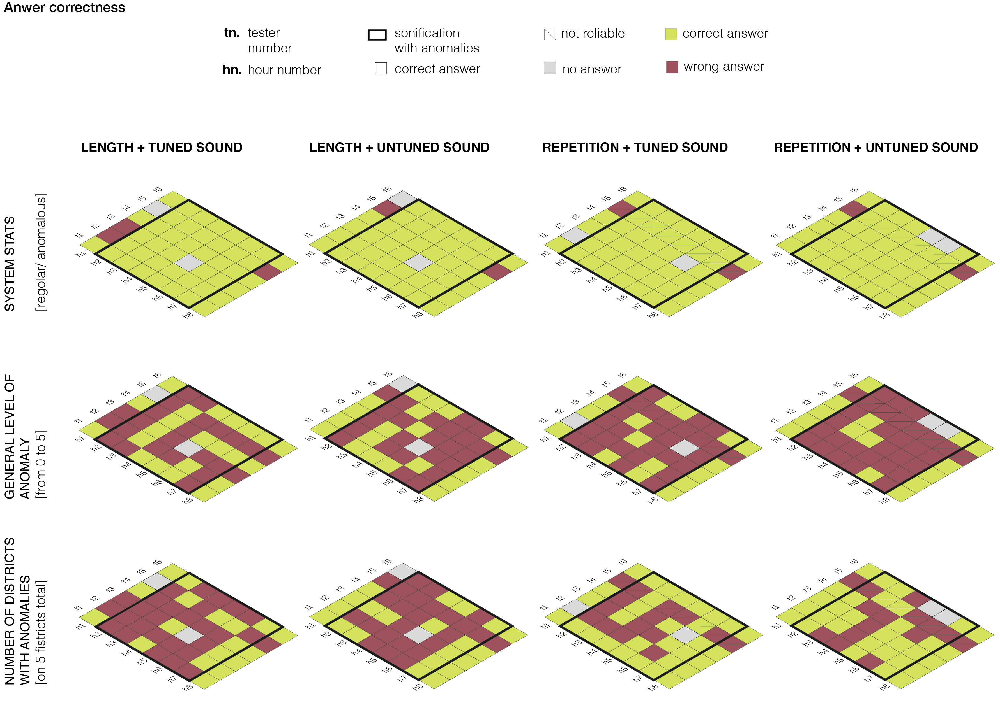
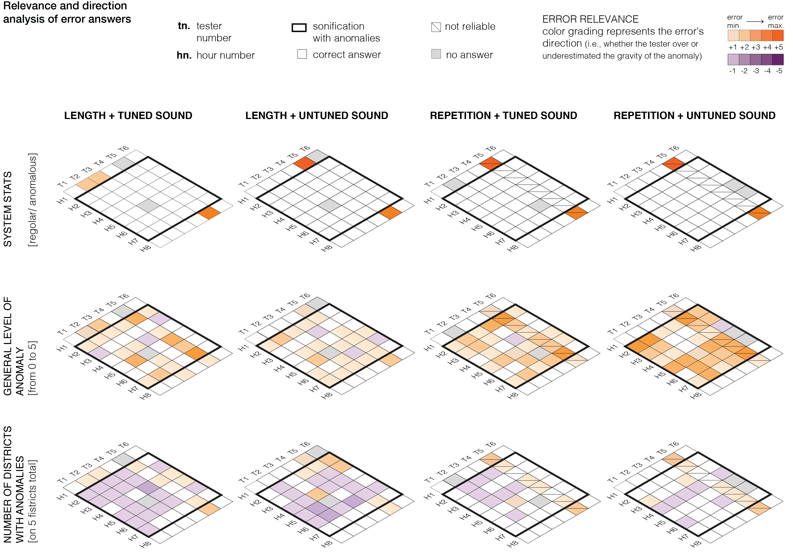
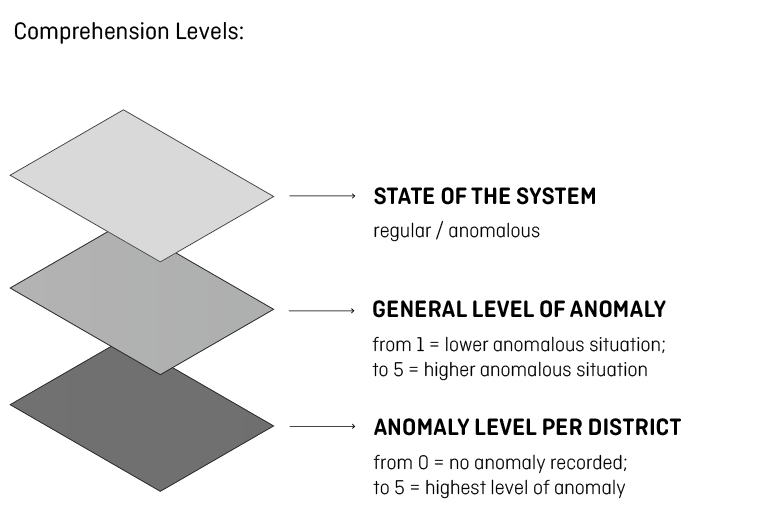
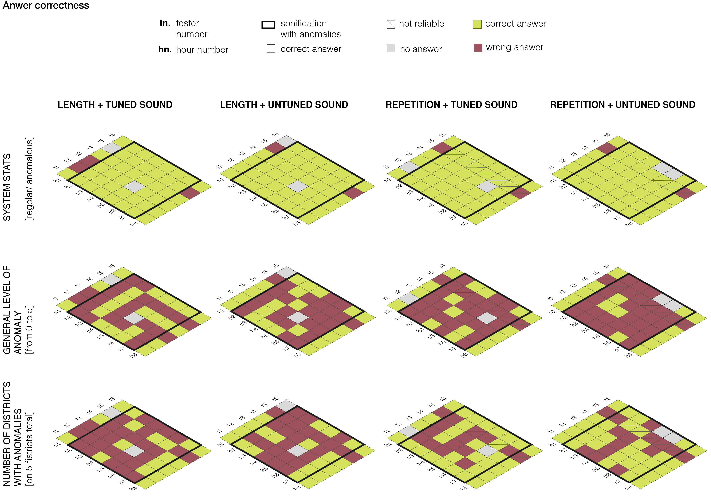
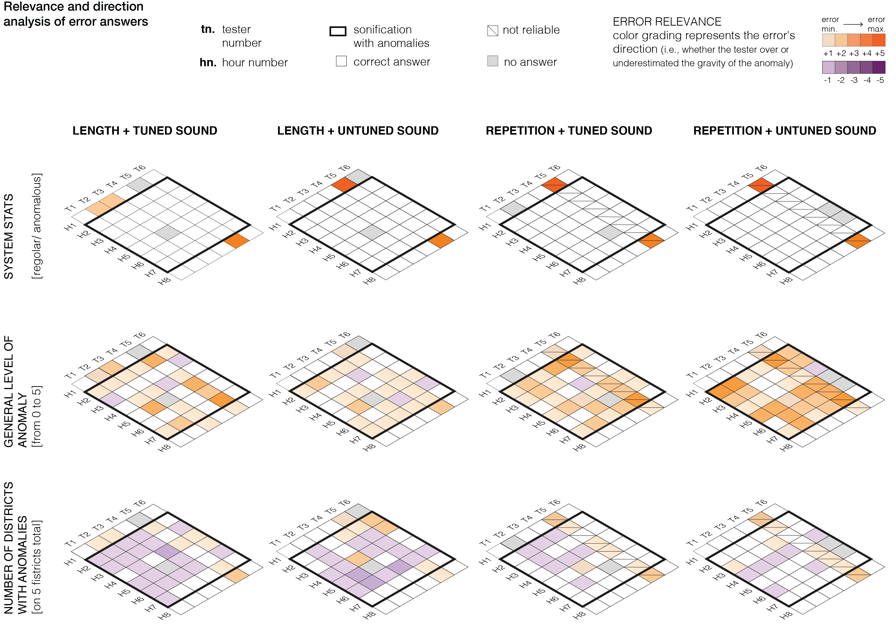

An experiment was run on the 4 final Scenarios (1A, 1B, 2A, 2B), to test the real users reaction and to gather their feedbacks.
The goal of the whole experiment was, first, to understand if the sound could be useful to reveal the cyber-attacks, and second, to select the best Scenario and third to select the most suitable sound.
The experiment includes the four Scenarios selected and it is structured in three phases: a preliminary questionnaire, a quantitative test and a final semi-structured interview.
The goal of the whole experiment was, first, to understand if the sound could be useful to reveal the cyber-attacks, and second, to select the best Scenario and third to select the most suitable sound.
The experiment includes the four Scenarios selected and it is structured in three phases: a preliminary questionnaire, a quantitative test and a final semi-structured interview.
Protocol
- Preliminary questionnaire
Users had to complete a form requesting some personal information and competence areas.
We profiled them to better interpret the data gathered during the next phases. - Quantitative test
It is the main phase of the experiment.
We asked to the users to test the Prototypes and fill in a table specifying the state of the system, the anomaly level and the district involved for each sonification.
Specifically, the questions they had to answer were:- Did you listen to the sound?
- If not, why? (Where were you? / What were you doing?)
- How would you describe the status of the system?
- How would you rate the anomaly level on a scale from 1to 5 (where 1 is the minimum and 5 the maximum)
- How many Districts present anomalies?
- Which Districts present anomalies?
- Try to report the level of the anomaly by District
-
Semi-structured interview
The final interview was focused on understanding the context where the test was taken. We also gathered suggestions coming from the user to direct the next improvements.
The test took place for 2 weeks; testers were asked to use the prototypes in a real context, during their daily routine, for eight hours consecutively. Every Prototype, corresponding to one Scenario, occupied one day long, for a total of four full testing days. We asked testers to keep a few days’ break between one Prototype and the following one, to avoid influences or bias. The Prototype testing followed a random order which considered: for the first day of the first week, Scenario 1A; for the second day of the first week, Scenario 2B; for the first day of the second week, Scenario 2B; for the second day of the second week, Scenario 2A.
Testers
Six people took part in the experiment. They are domain-experts, selected considering the competence in the project area.
The sample includes 3 men and 3 women, between 25 and 32 years of age, with different cultural background (they come from Europe, South-East Asia, Pacific Area). One of them works for a company, while the others occupy a research position in the University.
They studied Informatics and System Engineering, Water Management and Environmental Engineering. Two testers are currently working in the Cyber-Physical Security, one is employed in Water Infrastructure Engineering. About their sound competence, two of them declared they had played or play an instrument, a third tester expressed his passion for music.
All the preliminary information and a project explanation were gathered in a website shared with the users.
First, we provided an introduction to the sonification technique, then we described the project idea providing the key to understand the sound. The instruction and the time table of the experiment organization were provided. The website was shared with testers ready to take part into the experiment. An additional section was added to the website just before the final interview, to gather all the sonification so that the testers could better remember the sound and more precisely answer the questions.
The sample includes 3 men and 3 women, between 25 and 32 years of age, with different cultural background (they come from Europe, South-East Asia, Pacific Area). One of them works for a company, while the others occupy a research position in the University.
They studied Informatics and System Engineering, Water Management and Environmental Engineering. Two testers are currently working in the Cyber-Physical Security, one is employed in Water Infrastructure Engineering. About their sound competence, two of them declared they had played or play an instrument, a third tester expressed his passion for music.
All the preliminary information and a project explanation were gathered in a website shared with the users.
First, we provided an introduction to the sonification technique, then we described the project idea providing the key to understand the sound. The instruction and the time table of the experiment organization were provided. The website was shared with testers ready to take part into the experiment. An additional section was added to the website just before the final interview, to gather all the sonification so that the testers could better remember the sound and more precisely answer the questions.
Possible Bias
We need to consider the reliability of the users’ answers based on their personal judgment. Differentiating the preferences from an objective evaluation is always difficult when questions try to inspect some personal perception. Moreover, the accuracy of the answers also depends on the testers’ engaging raise. The motivation influenced the attention they were willing to dedicate listening to the sounds and the accuracy of the answers they provided.
Another possible bias concerns the training role a Scenario can do for the following one. We tried to outdo this problem making the order they were played random.
The choice of the information we decided to share with the testers could represent a problem influencing their perception, too. For this reason, we made available, for people interested in, the website we shared with the testers to make readable the information they accessed before the sonification evaluation.
Another possible bias concerns the training role a Scenario can do for the following one. We tried to outdo this problem making the order they were played random.
The choice of the information we decided to share with the testers could represent a problem influencing their perception, too. For this reason, we made available, for people interested in, the website we shared with the testers to make readable the information they accessed before the sonification evaluation.
Preliminary Hypothesis
During the preliminary analysis, we noticed that some other external sonification projects were built without considering the context where they would be eventually integrated. Most of the times, sonifications are produced to explore some information or to produce an artistic sound track starting from data. Our project is different because the features of the context drove the idea to use the sound. The sonification is a solution to solve the common problems for the analysts working in a water plant. The sound offers a synthesis of the information needed to identify the status of the system, providing the first level of knowledge useful to report anomalies and cyber-attacks. Using a different way, instead of the visual one, the sound allows the system monitoring meanwhile other operations are taking place.
Our hypothesis considers the sonification useful to improve the monitoring of the system status in real time. Combining the visualizations currently used with a preliminary analysis supplied by the sound, the decision process could be improved. More specifically, the sonifications help users to better distinguish the level of anomaly, reducing the time needed to understand the problem and intervene to solve it. We also suppose the sound can cover the geographic information, driving the following visual analysis to deepen the irregularity.
About the Scenarios, we hypothesized the first structured (1-Duration), based on the sound duration, works better in the tuned version (A), while in the second case (2-Repetition) the untuned version (B) could convey the information more efficiently.
Our hypothesis considers the sonification useful to improve the monitoring of the system status in real time. Combining the visualizations currently used with a preliminary analysis supplied by the sound, the decision process could be improved. More specifically, the sonifications help users to better distinguish the level of anomaly, reducing the time needed to understand the problem and intervene to solve it. We also suppose the sound can cover the geographic information, driving the following visual analysis to deepen the irregularity.
About the Scenarios, we hypothesized the first structured (1-Duration), based on the sound duration, works better in the tuned version (A), while in the second case (2-Repetition) the untuned version (B) could convey the information more efficiently.
Results
Quantitative results drove us to understand the potentialities of the sonification in relation to the analysts’ work and water management context. Specifically, the quantitative analysis of the testers’ reaction highlights if users were able to identify the information coming from the algorithm, attributing a level of seriousness to the anomaly and placing the irregularities in the district where they were occurring.
The results has been analysed considering three different level of comprehension on which the experiment is based on.

This quantitative analysis has no statistical relevance because of the low number of testers taking place to the experiment. So, second series of quantitative testing is planned in order to investigate the relevance of the answers already gathered. A qualitative analysis helped us identifying the emerging patterns in the users’ approach. We clustered their reactions to the different Prototypes to obtain suggestions for further developments.
All testers performed well in the system status evaluation.
They easily discern a normal situation from an anomalous status. 
The attribution of the anomaly level and the identification of the specific districts involved seemed to be more difficult. Indeed, users tended to under-estimate the number of districts involved in the Scenarios 1, while an over-estimation of the seriousness of the anomaly happened in the Scenarios 2.
The under-estimation strongly effects the sonifications in which the level of anomaly is directly proportional to the sound duration. This is probably because testers have superimposed the sounds of different districts evaluating the presence of fewer sounds compared with the ones really involved. This particularly happened in the Scenario 1B, because the untuned sound required more effort and ability.
An over-estimation of the seriousness of the anomaly happened in Scenarios built on sound repetition. It could be caused by the “anxiety effect” due to the intense sound repeating in a short time range.
In particular, Scenario 2B records the higher level of anomaly perception. This interpretation needs a deeper investigation which could be possible gathering more data.
It is also important to consider that the majority of the users reported improvements over the daily performance, proving the good effects that a longer and more structured training could have. 
Generally, a very positive attitude towards the integration of sonification in control rooms was observed. What users appreciated mostly concerned the possibility of hearing the sound while focusing on other visual tasks. They also like the possibility to evaluate the anomaly level, introduced by the sound.
All users judged the Scenario based on the sound duration and an untuned sound (1B) as unpleasant and annoying.
A general inclination for tuned tones appears.
Some users attributed to the Prototype built on the repetition of untuned sounds (2B), metaphors coming from personal experience, revealing the potentiality of the embodied approach.
The results has been analysed considering three different level of comprehension on which the experiment is based on.

Image source: [B]
This quantitative analysis has no statistical relevance because of the low number of testers taking place to the experiment. So, second series of quantitative testing is planned in order to investigate the relevance of the answers already gathered. A qualitative analysis helped us identifying the emerging patterns in the users’ approach. We clustered their reactions to the different Prototypes to obtain suggestions for further developments.
All testers performed well in the system status evaluation.
They easily discern a normal situation from an anomalous status. 
Image source: [B]
The attribution of the anomaly level and the identification of the specific districts involved seemed to be more difficult. Indeed, users tended to under-estimate the number of districts involved in the Scenarios 1, while an over-estimation of the seriousness of the anomaly happened in the Scenarios 2.
The under-estimation strongly effects the sonifications in which the level of anomaly is directly proportional to the sound duration. This is probably because testers have superimposed the sounds of different districts evaluating the presence of fewer sounds compared with the ones really involved. This particularly happened in the Scenario 1B, because the untuned sound required more effort and ability.
An over-estimation of the seriousness of the anomaly happened in Scenarios built on sound repetition. It could be caused by the “anxiety effect” due to the intense sound repeating in a short time range.
In particular, Scenario 2B records the higher level of anomaly perception. This interpretation needs a deeper investigation which could be possible gathering more data.
It is also important to consider that the majority of the users reported improvements over the daily performance, proving the good effects that a longer and more structured training could have. 
Image source: [B]
Generally, a very positive attitude towards the integration of sonification in control rooms was observed. What users appreciated mostly concerned the possibility of hearing the sound while focusing on other visual tasks. They also like the possibility to evaluate the anomaly level, introduced by the sound.
All users judged the Scenario based on the sound duration and an untuned sound (1B) as unpleasant and annoying.
A general inclination for tuned tones appears.
Some users attributed to the Prototype built on the repetition of untuned sounds (2B), metaphors coming from personal experience, revealing the potentiality of the embodied approach.